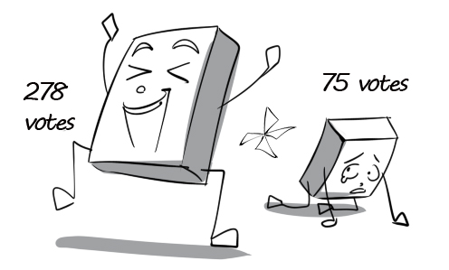
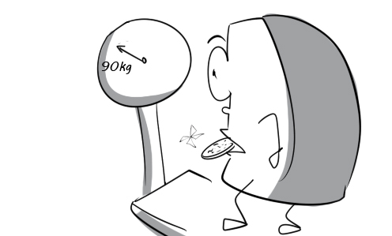

incident: There was a strange incident at the museum last night. A dinosaur skeleton came to life and ran around.
carry out: My company is carrying out a survey on the customers.

election: Barack Obama won the 2008 presidential election and became the 44th president of the US.

threat: Tsunamis and earthquakes are constant threats in Japan.
obtain: The biologist obtained a very clear result in the third experiment.
investigate: The reporter tried his best to investigate the facts about the political scandal.
replacement: All the employees are shocked at the replacement of the general manager.
vintage: The billionaire has a huge collection of vintage cars.
lease: He regretted signing a 3-year lease for this luxury apartment.
proposal: Peter immediately declined his friend's unreasonable proposal.
applause: The audience gave Adele a round of applause after she finished her song.
mediate: I am always the one who mediates their disputes.

capital: David is such a capital policeman. He always finishes his assignments on time.
instill: The professor hopes to instill a passion for mathematics in his students.
pilot: After four years of training, Andrew can pilot this airplane expertly.
overthrow: The rebels succeeded in overthrowing the dictator.
allege: Tommy alleges that his classmate stole his new pen.
defendant: The defendant insists that he is innocent in the court.
seize: The bank robber seized the bank and kept many people as hostages.
arson: Peter carried out an arson attack on his enemy's house to take revenge on him.
relapse: The patient relapsed within one month because he didn't follow his doctor's recommendations.
surgery: The doctors are performing a delicate heart surgery.
medical: My sister is working as a nurse at this medical center.
treatment: Tom went to the hospital to receive medical treatment for his broken leg.
bruise: Peter has a bruise around his eye because he engaged in a fight with his friend.
estate: The millionaire has many estates in the city.
specify: He said he would pay me a visit but did not specify a date.
committee: The Olympic committee decided not to allow this athlete to take part in the upcoming games.

grind: John uses this machine to grind coffee.
retard: Our departure was retarded by the storm.
isolation: Isolation from managers can make CEOs suffer from a lot of stress.
presidential: A great proportion of the expenses in a presidential campaign are related to media and advertising.
trunk: The trunk of this tree is so large that three people holding hands can't hug it successfully.
ladder: Peter carries his heavy ladder very easily.
sweep: SARS epidemic swept through Asia in 2003, killing nearly 800 people.
polish: David is polishing his shoes with a handkerchief.
participant: The participants of the marathon competition come from various countries.
instrument: Doctors use medical instruments in the diagnosis and treatment of medical conditions.
overpass: Please use the pedestrian overpass to cross the street.
pull over: David has to pull over here because he gets a flat tire.

chore: Being the eldest child, I help my parents with the household chores.
unlikely: This small apple tree is unlikely to produce 100 tons of apples.

tablet: This tablet contains a variety of medicinal ingredients.
swallow: The little boy refuses to swallow the tablet because it is really bitter.
pharmacy: I went to the pharmacy to buy some flu medications.
prospect: There's much prospect that our city will develop soon.
lower: Martin asks me to lower my voice because he is studying.

shipping: This shipping company uses modern vans to deliver goods.
valid: The Disneyland tickets she bought are just valid for one day
invoice: Tom asked the cashier to give him his invoice.
ensure: Please ensure that the door is completely locked before you leave!
reserve: Farmers store rice straws as a combustible reserve throughout the winter.
reflect: His aggressive behaviour reflects his bad attitude.
abuse: This child has suffered from child abuse for a long time.
figure: The team leader asks me about the figure of how many people attend the ceremony.
draft: I am working on a rough draft of my painting.
attorney: The attorney is presenting evidence to prove that the defendant was innocent.

abdomen: Peter is suffering from the pains in the abdomen because of over-exercising.
abduct: The president's son has been abducted by the rebels.
alias: James Bond adopts many alias when he is on his missions.
alien: The local people found aliens very strange and bizarre.
banal: The singer is singing a song with banal, repeated words.
belabor: The poor boy was belabored by the bullies.
bestow: This sports car was bestowed upon Mr. Thomas by the CEO.
deposit: David deposits half of his salary in the bank.
devise: The director devises sales plans for the next year.
discharge: The soldier was discharged from the military because of his injury.
displace: Peter displaces his wardrobe to look for his ring.
empathetic: Mr. Thomas always confides his worries to his wife because she is very sensitive and empathetic.
encase: His body is completely encased in bandages because he has been injured by burning.
endanger: David endangered himself when he agreed to participate in the knife throwing performance.
engage: My brother engages in a variety of sports activities.
flair: Michael started to create music when he was a child. He seemed to have a flair for music.

former: The former name of Ho Chi Minh city is Saigon.
herald: Persistent sneezes often herald a flu.
intact: Although the box was damaged, its content still remained intact.

interfere: Mary asks her boyfriend to stop interfering in her life because she wants to make her own decisions.
intruder: You should call the police immediately when an intruder break in your house.
irrigate: The village's inhabitants build this canal to irrigate their crops.
landing: The landing of men on the moon is one of the greatest achievements of mankind.
laurel: Roger Federer has won laurels for winning the Wimbledon championship.
sacrifice: The mother sacrificed her whole life to the happiness of her children.
linger: Andrew lingers at the crossroads because he doesn't know which way to go.
marsh: Be careful! This marsh is full of fierce alligators.
dissolve: Mr. Jobs decided to dissolve his company because he went bankrupt.
migrate: Millions of birds migrate south when winter is coming.
moisture: In cold weather, there will be moisture on your car windows when you park it outside.
molest: Mary's manager kept molesting her, so she decided to teach him a lesson.
strike: Mr. Thomas is trying to strike the burglar with a baseball bat.
sue: I will sue you if you don't give me back my money.
sugary: Eating a lot of sugary snacks will make you gain weight.

sum up: The manager asks me to sum up everything we have discussed in the meeting.

terrify: Mary was terrified by the ghost.
thrive: The business is thriving thanks to the good and thorough strategy of the CEO.
tier: The car rental agency had some tiers of cars for customers to choose.
torture: The soldier has been suffering gruesome tortures in prison for a long time.
treadmill: Peter exercises on the treadmill for 30 minutes every evening.
treaty: The US and Japan signed a commercial treaty today.
unruly: The mother doesn't know how to educate her unruly son.
vomit: David vomited continuously after drinking too much.